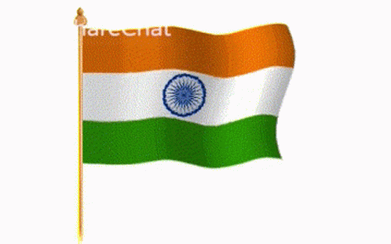

INDIA
- Sanskrit is one of the earliest known languages in the world, and a member of the Indo-European family of languages, from which most modern European languages have originated.
- Interestingly, India was one of the richest countries on earth before the British invaded it in the early 17th century, and was also one of the first countries in the world where diamonds were found.
- It is the seventh largest country in the world. The total area covered by India is 32,87,263 sq km, out of which the land covers 29,73,190 sq km.
It is four times the size of Pakistan, 13 times the size of UK and nine times the size of Japan.
- The natural resources of India include coal, manganese, bauxite, limestone, natural gas, iron ore, etc. Indian Railways is the world's eighth largest employer, employing over 1.4 million people.